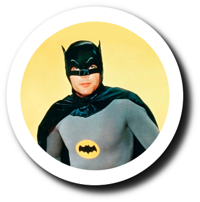

¿Batman? ¿Es un nuevo Framework? ¿Un lenguaje?
¿Un paradigma?
¿Una librería, un técnica ...
Estamos en la TLP
VAmos a pasarlo bien :-)
¿Qué es un DSL?
Y ejemplos
Qué es un DSL
Domain Specific Language
- Dominio: El problema que queremos resolver
- Específico: Sólo para ese dominio
- Lenguaje: Para ser escrito y leído por personas
¿Es una herramienta esotérica?
¿Alguien ha usado un DSL antes?
Ejemplo 1: SQL
Extraer información de un sistema de base de datos relacional
SELECT *
FROM VENTAS
WHERE precio <= 0.99;
Ejemplo 2: Expresiones regulares
Buscar y extraer patrones de texto dentro de otros textos.
[A-Za-z_][A-Za-z0-9_]*
Ejemplo 3: CSS
Especificar la apariencia gráfica de
elementos HTML
No es un lenguaje de programación,
y sus usuarios no son necesariamente desarrolladores
div.titulo {
color: #BB2266;
font-size: 24pt;
}
Especificar la apariencia gráfica de elementos HTML
No es un lenguaje de programación, y sus usuarios no son necesariamente desarrolladores
div.titulo {
color: #BB2266;
font-size: 24pt;
}
Más ejemplos
Html, Django templates, Jinja2, MarkDown, RST, Ficheros de configuración, Graphviz, Make, Rake, Gherkin Syntax, AWK, XAQL - Xapian Query Language Parser, Less, Sass, YAML, JSON, SIML, ...
Características
Y contraejemplos
Características
- No son de uso general (rara vez un DSL es turing-completo)
- Sencillos, hacen únicamente lo que tienen que hacer, nunca se salen del dominio
- Pensados para ser leídos y escritos por humanos (aunque se puedan generar automáticamente)
Ejemplos de lenguajes que no son DSL (IMHO)
- R (Estadísticas): Restringido a un dominio (estadísticas), pero en realidad es un lenguaje turing-completo.
- XSLT: Restringido a un dominio (Transformar contenidos XML), pero no pensado para ser leído o escrito por humanos (cuerdos), como la lengua de Mordor
Ventajas
- El lenguaje es más legible y corto
- No Turing-completo
- Puede ser usado por personal no técnico
- Flexible y adaptable
- Es texto: Podemos transformarlo, almacenarlo, distribuirlo, encontrar diferencias, representarlo, etc...
- Fomenta la colaboración entre personas de distintas especialidades
- Control de versiones
Tipos de DSL
Según Martin Fowler

Tipos de DSL
- Internos
- Externos
DSL Interno
- Expande el interprete
de un lenguaje de propósito general
- Fácil, pero
condiciona la gramática
- Parser gratis
- Ventajas:
toda la potencia del lenguaje base
- Desventajas:
toda la potencia del lenguaje base
muy habitual en lenguajes como ruby, scala, groovy, lisp...
Se puede implementar un DSL Interno en Python
- No es el lenguaje más cómodo para esto...
- ... pero se pueden hacer algunas cosas
- Hay librerías que nos permiten manipular el arbol AST que utiliza el propio Python para la generación de código
- Muy potente, muy loco, muy peligroso, muy divertido. Elige una
DSL Externos
- El lenguaje es totalmente a nuestro gusto
- Tenemos que escribir nuestro propio parser
- Mola, pero puede dar miedito. Pero no es tan terrible como parece
Escribiremos nuestro propio lenguaje
Bwahaha!

Estructura de un parser
Distintos autores usan diferentes nombres, pero básicamente consta de 4 fases:
- Scanner
- Analizador Léxico, Tokenizer o Lexer
- Analizador Sintáctico o Parser
- Intérprete o generación de código
Cada capa o fase usa los servicios de la anterior y pasa sus resultados a la siguiente
Scanner
- La primera capa y la más sencilla. Simplemente lee la entrada carácter a carácter.
- A veces puede ser un poco más complicada. por ejemplo, puede que necesite leer caracteres por delante del actual, para poder tomar decisiones Por ejemplo, para discriminar entre a++ y a+1
Lexer/Tokenizer
- También llamado analizador léxico
- Usando la salida del scanner, lee caracteres y devuelve una serie de unidades léxicas o Tokens. Si fuera lenguaje humano: palabras y signos
- Es sencillo de implementar. Una técnica muy usada es usar expresiones regulares
- Los tokens devueltos están etiquetados para saber su tipo. Si fuera lenguaje humano: palabra + función, p.e. verbo
Parser / Gramática
- Organiza los tokens entregados por el lexer de forma que sean procesables. Esto es, normalmente, en forma de árbol
- Para ello utiliza una Gramática del lenguaje
- Existen varios algoritmos, cada uno con sus ventajas e inconvenientes
- El turrón está aquí
Diferencia entre léxica / Gramática
Cuanto peor mejor para todos y cuanto peor para todos mejor mejor para mi el suyo beneficio político [Fin de la cita]
Generación/Ejecución de código
- La última fase. En el caso de un lenguaje de programación general, se genera o ejecuta código, bytecodes o código ejecutable
- Normalmente en un DSL se crea o controla un módelo
- En cualquier caso, es la fase final. Lo que hagamos con el árbol es cosa nuestra
Gramáticas
Para todos

¿Que es una gramática?
- Desde un punto de visto formal, una gramática es un conjunto de reglas llamadas producciones
- De esas reglas, una debe ser la inicial
- Las reglas tienen la forma:
<parte derecha> → <parte izquierda>
la → se suele representar de muchas maneras, pero viene a significar “se define como”
Mejor con un ejemplo
Supongamos un lenguaje muy, muy sencillo:
Begin
Bob 12
Alice 26
End
¿Cómo definimos este lenguaje?
Baśicamente, entre Begin y
End,
una lista de varios nombres,
junto con un número.
Algunos detalles más...
- Los nombres son una sola
palabra;
Bobes válido,Robert Drakeno. - La primera
letra del nombre tiene que ser
alfabética, pero luego se aceptan números:
labo3es válido pero3ellno. - Los números son enteros,
no se aceptan
decimales,
123es válido,3.14no. - Al menos tiene que venir una línea de datos
Vale, ya lo tenemos claro, pero ...
¿Como definimos eso de forma rigurosa?
Es decir, matemática
Con una gramática
Program --> Begin line+ End
line --> id num
id --> [A-Za-z][A-Za-z0-9]*
num --> [0-9]+
Otra gramática
Program --> Begin lines End
lines → line+
line --> id num
id --> [A-Za-z][A-Za-z0-9]*
num --> [0-9]+
Una gramática define un lenguaje, pero un lenguaje puede ser definido por diferentes gramáticas
Diagrama de Vías ferreas

Símbolos especiales
|Representa alternativas, a|b significa que se puede generar a o b*Significa repetición de cero o más+Significa repetición de uno o más?Opcional (uno o cero)[a-z]Rango de caracteres.
[0-9] se podría representar como
0|1|2|3|4|5|6|8|9
¿Por qué perder el tiempo con las gramáticas?
- La gramática nos permite definir que textos pertenecen al lenguaje, aun más interesante, cuales no
- Es decir, que si hay errores, los detectará
- Nos permiten generar el parser de forma automática
Ejemplo de DSL
Y formas de implementarlo
GOTHAN Electro
Mechanical
Secret
Weapons and Devices
Una division de Industrias Wayne
Liderer en instalación de mecanismos secretos de apertura y armamento sofisticado para el heroe moderno
GOTHAN Electro Mechanical Secret Weapons and Devices se dedica a instalar mecanismos automáticas para que su entrada secreta siga siendo, ejem,... secreta
¡Cuéntame más!

Como funcionan nuestros dispositivos
- Los dispositiovos se comunican usando
un bus de datos
común
- El controlador y los dispositivos
emiten eventos
o comandos de 4 letras
- Cada cliente pide una
combinación diferente
de eventos para abrir la puert
- Se implementa una maquina de estados, distinta
para cada cliente
Por ejemlo, nuestra cliente Selina Kyle...
Para abrir su escondite secreto:
- Debe cerrar la puerta de la sala (D1CL), y luego
- Encender la luz (l1ON) y abrir una gaveta (D2OP)
- O viveversa: Abrir gaveta y encender luz
Solo si se pruduce esta secuencia se abre el escondite secreto

Maquina de estados en Python (Evento)
class Event:
def __init__(self, code, name=''):
self.code = code
self.name = name or code
...
Maquina de estados en Python (Estado)
class State:
def __init__(self, name, description=''):
self.name = name
self.description = description or self._desc(name)
self.actions = []
self.transitions = {}
...
def add_transition(self, event, state):
self.transitions[event.code] = state
def add_action(self, cmd):
self.actions.append(cmd)
Maquina de estados en Python
class StateMachine:
def __init__(self, initial_state):
self.start = self.current_state = initial_state
def all_states(self):
...
def all_event_codes(self):
...
def handle(self, code):
state = self.current_state
if code in state.transitions:
new_state = state.transitions[code]
print('{} --[{}]--> {}'.format(state, code, new_state))
self.current_state = new_state
bus.send(return new_state.actions)
Definir la máquna de estados (para Selina)
idle = State('idle', 'En espera') # Estados
active = State('active', 'Activo')
wait_for_draw = State('wait_for_draw', 'Waiting for drawer')
wait_for_light = State('wait_for_light', 'Waiting for light')
unlock_panel = State('unlock_panel', 'Opened Panel')
door_closed = Event('D1CL', 'Door closed') # Eventos
light_on = Event('L1ON')
open_drawer = Event('D2OP')
open_panel = Event('PNOP')
close_panel = Event('PNCL')
idle.add_transition(door_closed, active) # Transitions
active.add_transition(light_on, wait_for_draw)
active.add_transition(open_drawer, wait_for_light)
wait_for_draw.add_transition(open_drawer, unlock_panel)
wait_for_light.add_transition(light_on, unlock_panel)
unlock_panel.add_action(open_panel)
unlock_panel.add_transition(close_panel, idle)
sm = StateMachine(idle)
Vale, funciona
... ¿Y si le añadimos un DSL para definir los estados?
Por ejemplo
script -> transitions + actions
transtitions -> transition+
actions -> action*
transition -> estado "--" codigo "-->" estado
action -> estado -> codigo
estado -> [a-z][a-z_0-9]*
codigo -> [a-zA-Z]{4}
La máquina de estados en nuestro DSL
idle -- D1CL -> active // transactions
active -- L1ON -> wait_for_draw
wait_for_draw -- D2OP -> unlock_panel
active -- D2OP -> wait_for_light
wait_for_light -- L1ON -> unlock_panel
unlock_panel -- PNCL -> idle
wait_for_draw -> LED1 // actions
wait_for_light -> LED2
wait_for_light -> ALRM
unlock_panel -> OPEN
Implementación con pyparsing
_tail = Suppress('--')
_arrow = Suppress('->')
state = Word(alphas, alphanums+'_')
code = Regex('[A-Z0-9]{4}')
transition = state + _tail + code + _arrow + state
transitions = OneOrMore(transition)
action = state + _arrow + code
actions = ZeroOrMore(action)
script = transitions + actions + StringEnd()
script.ignore(dblSlashComment)
¡10 líneas de código!
Ten fucking lines of code!
Conclusiones

Peligros
- Complicar el DSL
- El DSL es un modelo. Todos los modelos son incorrectos
- Es código
- Es una herramienta muy específica, para ser usado ante determindos problemas
Otros usos
- Parsear ficheros de configuración
- Procesar ficheros de datos de los "raritos"
- Análisis de código / texto
- Para cuando las expresiones regulares se te quedan cortas
- ...
Por qué debería plantearme usarlo?
- Su princiapl virtud es la simplificacion y mejora estética del código:
- No es tan banal como suena:
- Mejorar la comunicación dentro y fuera del equipo
- Menos errores
- Es un añadido relativamante sencillo y útil a tu batcinturón